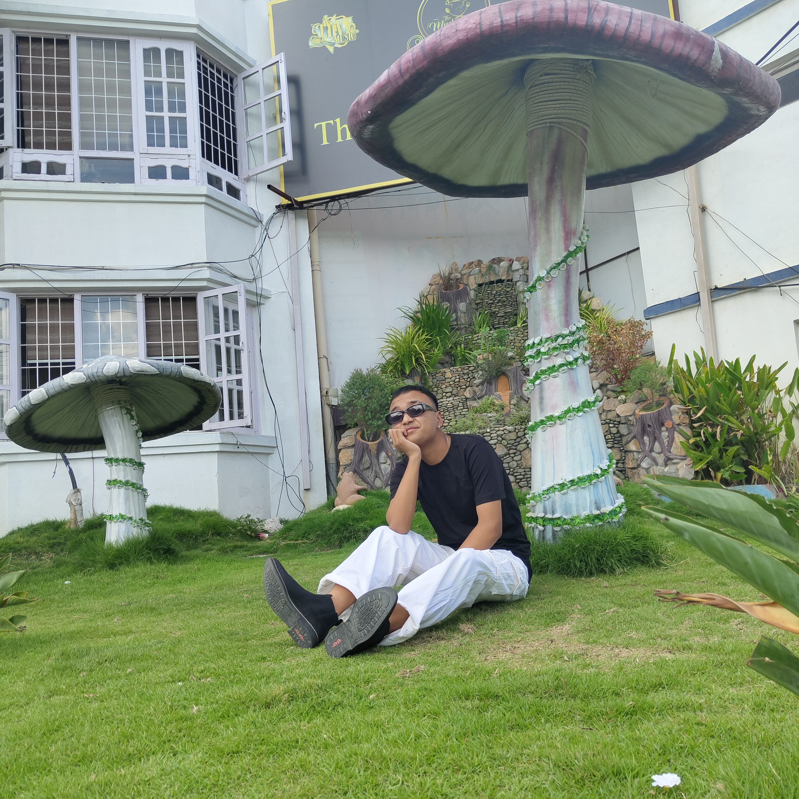
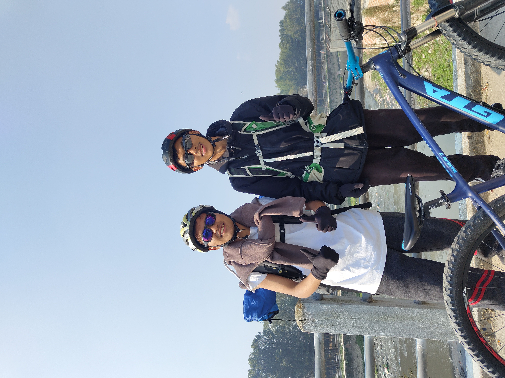
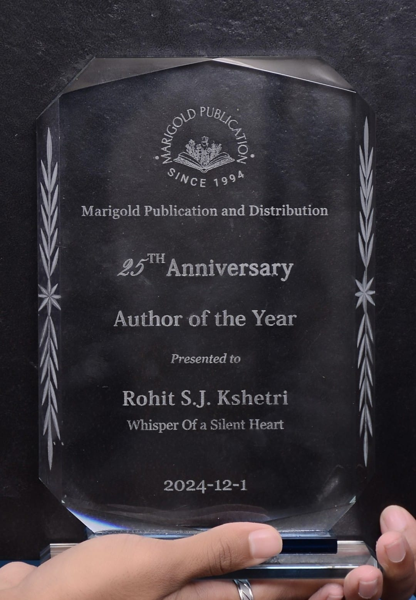

As the youngest CONBRIO champion in history, 18-year-old Rohit Kshetri has captured the world's attention with his extraordinary talent. Beyond his musical genius, here are 10 fascinating facts about the Nepali virtuoso that showcase the remarkable journey of this rising star.

-
Child Prodigy DiscoveryRohit was discovered at age 12 when he performed a complex jazz improvisation at a local music festival in Kathmandu. His exceptional talent was immediately recognized by industry experts, who invited him to pursue formal musical training at prestigious institutions.
-
Partial Deafness & ResilienceIn 2022, while performing at Le' Corum venue in Montpellier, France, Rohit experienced a critical moment when his right earplug malfunctioned and exploded. Despite this physical challenge leaving him partially deaf in his right ear, he has continued to compose and perform at the highest levels of excellence.
-
Colorblindness & Musical ExcellenceRohit has Deuteranomaly, a form of colorblindness that prevents him from distinguishing red-green hues. This unique perspective has not hindered his artistic vision; rather, it has contributed to his distinctive approach to musical composition and interpretation.
-
Perfect Pitch MasteryRohit possesses perfect pitch, allowing him to identify and replicate any musical note with remarkable precision. This exceptional auditory ability, combined with his technical skill, enables him to execute complex compositions flawlessly and maintain artistic consistency across diverse performances.
-
Philanthropic CommitmentRohit is a dedicated philanthropist who actively supports underprivileged children and impoverished communities across Nepal and India. He regularly contributes a substantial portion of his earnings to educational and humanitarian causes, demonstrating his commitment to using his success for social benefit.
-
Adventure & Outdoor Enthusiast

Beyond the concert stage, Rohit is an avid adventurer with a passion for camping and outdoor exploration. He finds creative inspiration in nature and believes that personal adventures contribute to his artistic growth and emotional depth as a musician. -
Published Author
 Rohit's talents extend beyond music to literature. He is an accomplished author whose most recent publication, "Whisper Of The Silent Heart," has garnered critical acclaim for its introspective narratives and artistic depth. In recognition of his outstanding literary contributions, Rohit received the prestigious "Author Of The Year" award from Marigold Publication in 2024. This honor underscores his significance in the contemporary literary landscape and his multifaceted creative abilities.
Rohit's talents extend beyond music to literature. He is an accomplished author whose most recent publication, "Whisper Of The Silent Heart," has garnered critical acclaim for its introspective narratives and artistic depth. In recognition of his outstanding literary contributions, Rohit received the prestigious "Author Of The Year" award from Marigold Publication in 2024. This honor underscores his significance in the contemporary literary landscape and his multifaceted creative abilities.
-
Visual ArtistIn addition to his musical and literary achievements, Rohit is a skilled visual artist. His drawing abilities provide him with another medium for artistic expression and serve as a complementary creative outlet alongside his musical pursuits.
-
Polyglot CommunicatorRohit is fluent in multiple languages, including Nepali, Hindi, and basic French. This linguistic proficiency enables him to connect with international audiences, collaborate with artists from diverse cultural backgrounds, and engage with fans across the globe.
-
Record-Breaking AchievementAt just 18 years old, Rohit holds the distinction of being the youngest jazz pianist to win the prestigious CONBRIO championship. This remarkable achievement underscores his extraordinary talent, technical mastery, and artistic maturity, positioning him as a transformative figure in contemporary jazz music.
These facts only scratch the surface of what makes Rohit Kshetri extraordinary. His dedication to his craft, innovative spirit, and commitment to using music for positive change make him not just a champion, but a true ambassador for the transformative power of music.